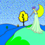
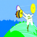
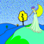
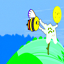

Forward Process
In the forward process, an image is denoised by subtracting away the noise that is predicted to be in the image. For diffusion, the model is trained on the noise given by: \begin{equation*} \mathcal{N}(0, \sqrt{1 - \overline{\alpha}}) \end{equation*} Adding this noise to our base image \begin{equation*} \sqrt{\overline{\alpha}} \cdot x_0 \end{equation*} gives the noisy image that the network sees at $\alpha$, the interpolation factor. Here, $\alpha$ is determined by a schedule, and we obtain it by $\alpha[t]$ where $t$ is the timestep $t \in [0, 999]$. Here are some results of generating the noisy image:


 


